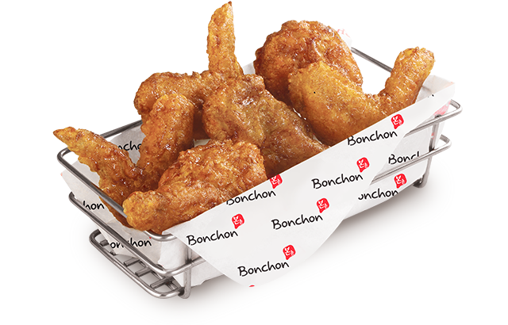
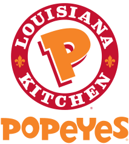
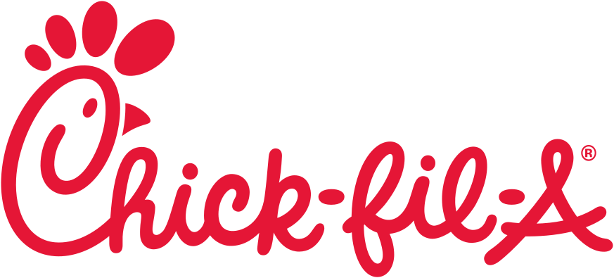

Kentucky Fried Classic
KFC is pressure-fried chicken pieces, seassoned with 11 herbs and spices
- 2/3 Ts Salt
- 1/2 Ts Thyme
- 1/2 Ts Basil
- 1/3 Ts Oregano
- 1 Ts Celery salt
- 1 Ts Black pepper
- 1 Ts Dried mustard
- 4 Ts Paprika
- 2 Ts Garlic salt
- 1 Ts Ground ginger
- 3 Ts White pepper

Korean Fried Chicken
Korean fried chicken is known for its addictively crunchy exterior and its thick sweet-and-spicy sauce. These chicken parts are double fried, once for cooking and second for crispiness.

Popeyes serves chicken dishes in mild and spicy flavors and offers sides such as red beans and rice, Cajun fries, mashed potatoes with Cajun-style gravy, Cajun rice, macaroni & cheese, and coleslaw.

It's in the fried chicken camp, but unlike Popeye's or KFC, doesn't really serve fried chicken either.